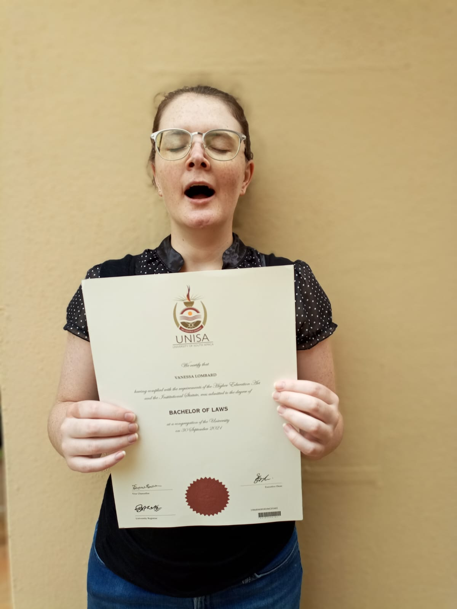

Vanessa Lombard
Software Developer
Summary
Enthusiastic and dedicated software developer with a background in law and a newfound passion for programming. Skilled in Python and Django with hands-on experience in development.
Education
Harvard University & edX
Computer Science:
I obtained my Introduction to Computer Science certificate in 2022 with an academic average of 99%.
This course covered HTML, CSS, C, Python, Flask, and MySQL.
Web Development:
I obtained my Web Programming with Python and JavaScript certificate in 2023 with an academic average of 100%.
This course covered HTML, CSS, JavaScript, React, Python, Django and MySQL.
These were two of my favourite projects:
Final Project - A Streaming Site
For my final project, I took on a very challenging task, creating a streaming site. I used YouTube’s API to play movie trailers as the ‘streamed movie’ and included a movie recommendations algorithm.
Previous Education - LLB & NSC
I obtained an LLB degree from UNISA in 2021, with an academic average of 70%. I obtained a National Senior Certificate in 2016, with an academic average of 71%.
Experience
Way With Words - Freelance Transcriber
During my studies I did freelance transcription typing. I made a JavaScript program to format the transcriptions using Regular Expressions and cut my working hours by 30%.
Website Design
After completing my courses, I made two websites for friends.
Art Alive Art School This project uses plain HTML, CSS and JavaScript with the Sanity CMS.
Uniquely Crafted Gifts This project uses Angular with the Sanity CMS.
Software Development
I am currently employed as the only Software Developer at an Occupational Health and Safety company. I have a good amount of experience in full-stack development, as well as analysing business needs and architecting a software solution.
My purpose is to help the company move from using Excel for business needs to a more sophisticated Company Intranet System. I write software for internal use. I use Django REST Framework for the backend, React for the frontend, PostgreSQL for data and Render for hosting.
I’ve developed a Project Costing Calculator that assists the sales team in determining quotes for clients. This Calculator incorporates the 6 stages of construction work, each requiring various fields for deliverables, which gets sent to the backend where each stage’s deliverables get calculated and returns total prices for individual items, as well as grand totals per stage and for the overall project. The Calculator also includes a ‘Human Resource Budget’ used by employees to track their time spent per project. The final calculations are then compiled into a downloadable PDF.
I’ve also developed a Conversion Software that converts the internal Scope of Works document into a Word and PDF file. Previously, this was all done by hand, the Scope would be filled in with a pen, this would go to the administrator who would type all the information from the Scope into the Word Proposal. This process took 40 mins. With my software, this process was reduced to seconds. It entails using a fillable PDF, instead of a printed one, reading the filled-in PDF and extracting all the data and then replacing placeholders in the Word Document with the extracted data and save to PDF.
I’m also developing an Master Client List application that will assist the company in tasks from registering a new client, recording work done for clients, to tracking invoicing, and reporting.
More About Me
Personal Attributes
Critical thinking - good insight into the consequences of decisions.
Unique problem solving - I think out-of-the-box.
Excellent computer skills - can learn new software quickly.
Excellent communication skills - good language skills, communicates well verbally and in written form.
Dedication - I don’t need other people to motivate me, I am self-driven.
Skills & Hobbies
Programming
Front-End Development
Back-End Development
Graphic Design
Video Games & Game Development in Godot
Self-Educated, Self-Driven with a Passion for Programming and Learning
Software & Technologies
Visual Studio & VS Code
PGAdmin
Git (CLI), GitHub & GitHub Desktop
Render - hosting Django & PostgreSQL
Sanity - content management system
Languages (Computer)
HTML, CSS, JavaScript & TypeScript
Python, Django & Flask
Angular, React & Bootstrap
C, MySQL, SQLite, PostgreSQL
Languages (Human)
Afrikaans - home language.
English - professional proficiency and work experience.